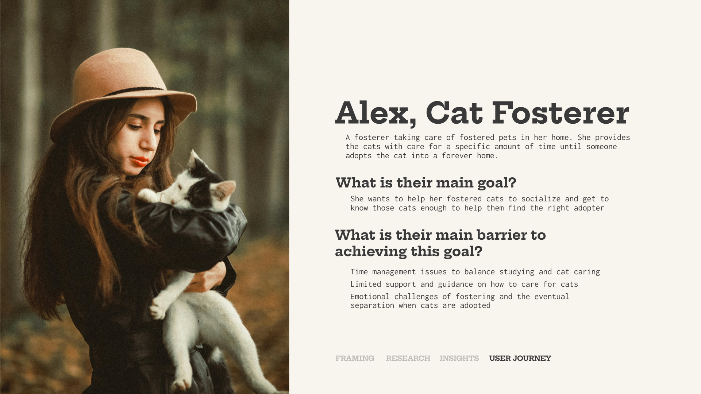
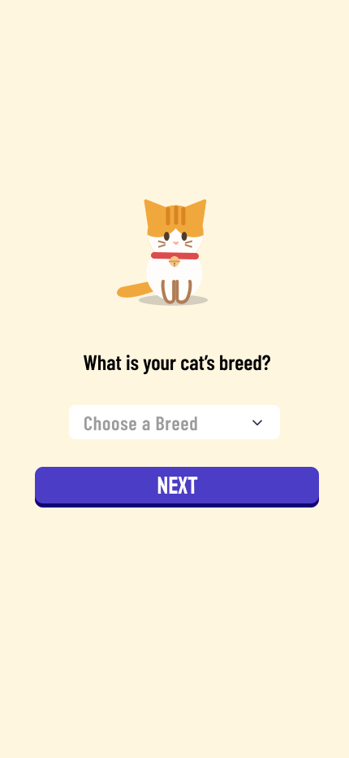
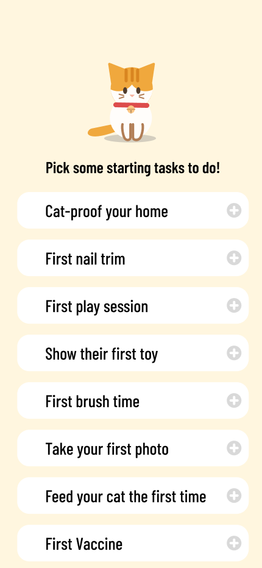
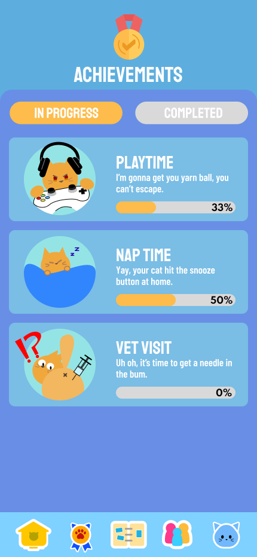
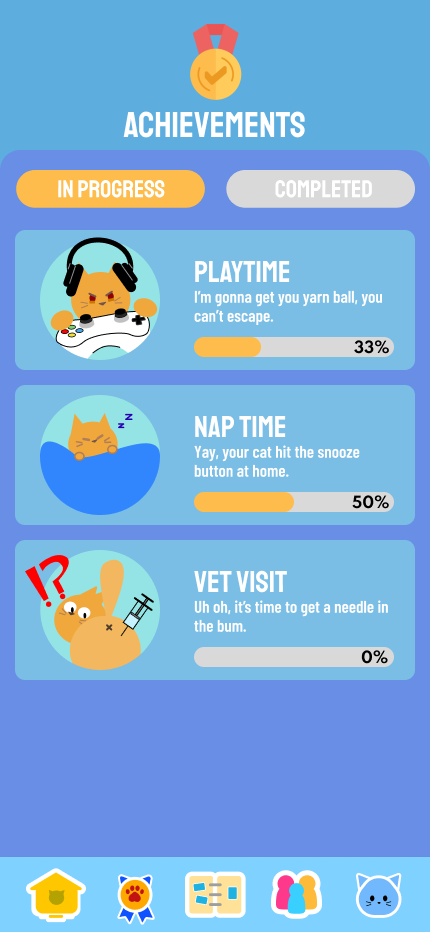
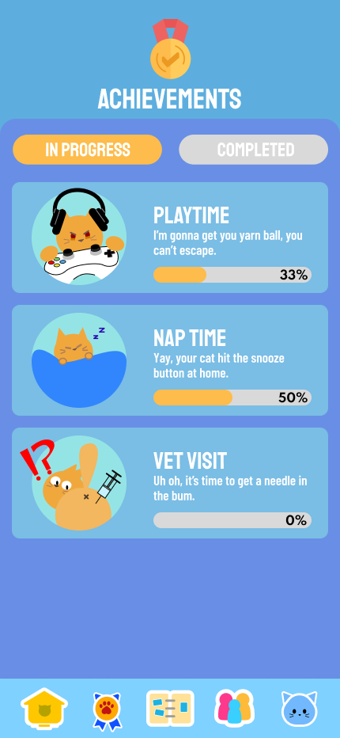

Researching experimental design and implementation in deliverables
Interaction Development
Creating suitable interactions within Figma prototype
UI/UX Design
Created interface and interactions
TEAM
Calvin Alexan
Yufeng Diao
Ryan Kwan
Angela Lee
Introduction
WHISKR is a mobile application catering to first-time cat owners in adapting to their new lifestyle as their pet's caretaker. The proposed design is meant to tackle problems for specific target audiences, which in this this case are people who wants to take care of cats.
This project is for an interaction design course which focuses on finding real-life issues and creating appropriate design solutions. Though in-depth research and iterative designing process, the design proposal will be impactful for the audience as a tailored product.
problem rationale
narrowing down real-life issues
anxious and inexperienced owners
target audience
Newer cat owners frequently attempt to over-prepare to enter their pet-parenthood, yet they frequently experience anxiety due to the uncertainties during the early stages.
design goals
what we seek to bring with our proposal
Ensuring confidence in cat parenting
target audience
We seek to tackle the initial anxiety and uncertainties that first-time owners have. By providing an easy to track routine, they can be ensured to be reminded about their cat's needs.
Reducing knowledge gaps
target audience
Rather than having to look up everything themselves, our team hopes to bring the answers in one tidy package. With all the key knowledge in one place, the entry to cat-parenthood can be made significantly easier.
Building good caretaking habits
target audience
We design the solution to not only fill in the unknowns, but also change the user's behavior themselves. The goal here is to combine learning and doing into one cohesive experience which makes it easy to remember.
problem exploration process
from the starting point to where we are
Target user personas
target audience
We seek to tackle the initial anxiety and uncertainties that first-time owners have. By providing an easy to track routine, they can be ensured to be reminded about their cat's needs.

collage style navigation
user interaction
The collage present in the landing page provides easy navigation to access the opera shows' pages. With a hover interaction, one of the four options are highlighted and provided with a brief description. Clicking on the option then opens the page for the individual opera shows.
solution forming
finding the appropriate form-factor

interface designs
Several visual directions were implemented in the form of posters to create a visual language with the previously explored elements. The potential of each exploration line are put to the test through iterations of the posters and their flexibility to take different arrangements in multiple form factors.


 
